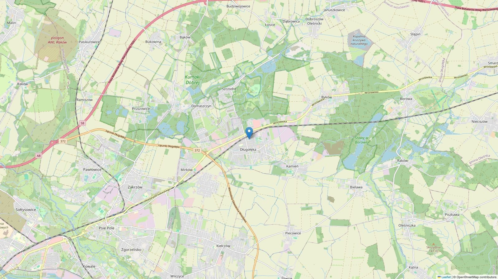

①Pierwszy właścicieljeżdżę nią od nowości
PLSalon Polskapierwsza rej. 20.12.2016
✓Bezwypadkowywszystkie szyby i poduszki oryginalne
ASOSerwis ASOolej zawsze co rok lub około 10 tys. km
×22 komplety kół OEMR17 – lato, czarny połysk
R16 – zima, srebrne
R16 – zima, srebrne
⚓Hak wypinanySteinhof, zakładany przez mechaników Honda
Zdjęcia
26 zdjęć · kliknij, aby powiększyćDane pojazdu
2016 ROKprodukcji · pierwsza rej. 12.2016
KMprzebieg orientacyjny – auto w użyciu
142 KMmoc · 1.8 i-VTEC
1 798 CM³pojemność · benzyna
Podstawowe
- Marka i model
- Honda Civic IX
- Wersja
- Sport ADAS / Connect+
- Rok / 1. rejestracja
- 2016 / 20.12.2016
- Kolor
- Twilight Blue Metallic
- Nadwozie
- Hatchback 5d · 5 miejsc
Napęd i spalanie
- Silnik
- 1.8 i-VTEC benzyna
- Skrzynia i napęd
- Manualna · przód
- Spalanie – trasa
- 5,5–6 l/100 km
- Spalanie – ekspresówka
- 6–6,5 l/100 km
- Spalanie – miasto
- 7–7,5 l/100 km
Stan i historia
- Przebieg (orientacyjny)
- ok. km
- Pochodzenie
- Salon Polska · Warszawa
- Pierwszy właściciel
- Tak
- Bezwypadkowy
- Tak
- Serwis
- ASO
- Rejestracja
- w Polsce
OpisPierwszy właściciel, salon PL, 2 komplety kół OEM, olej co rok… kliknij, aby otworzyć
Sprzedam Hondę Civic 1.8 IX Sport ADAS / Connect+
Jestem pierwszym właścicielem. O samochód bardzo dbałem. Sprzedaję, bo kupiłem nowy – czy będę żałował sprzedaży Hondy, to się okaże :)
- Honda Civic IX, 1.8 benzyna i-VTEC, pierwsza rejestracja 20 grudnia 2016, salon Polska – Warszawa
- Przebieg km – do niedawna nie było nawet 100 tys., ale kilka tras w góry wypadło
- Auto w ciągłym użytku, przebieg może się zmienić
- Skrzynia manualna
- Wszystkie szyby oryginalne, nigdy niewymieniane
- Ok. rok temu założony hak wypinany marki Steinhof w serwisie Honda; po wypięciu nie widać mocowań
- Komplet 2 oryginalnych kluczyków
- 2 komplety pełnych kół OEM Honda – letnie R17, zimowe R16
- Oryginalne czarne koła Honda w połysku do tego modelu, zachowane w idealnym stanie (brak rys lub nieznaczne, nienaprawiane)
- Koła zimowe Honda – kilka małych/średnich rys, stan dobry
- Olej wymieniany zawsze po roku lub 10 tys. km – 5W30, od zawsze ten sam
- Klocki Brembo z przodu – założone już chwilę temu, ale jeszcze pojeżdżą
- Dywaniki gumowe – kilka miesięcy temu kupiłem komplet
- Ok. 2 lata temu wymieniłem akumulator
- Niedawno robiony detailing – nałożony wosk na lakier
- W miarę rzadko spotykany kolor Twilight Blue Metallic
- Tapicerka zachowana w bdb stanie, boczki siedziska również w bdb stanie
- Multimedia: Bluetooth, zestaw głośnomówiący, ekran multimedialny, tempomat, system ostrzegania o kolizji / wyhamowuje, martwe pole, wykrywanie kolizji przy cofaniu, wykrywanie znaków drogowych, automatyczne światła drogowe, kamera cofania i uwaga – kalkulator (poważnie, regularnie go używam)
- Grzane fotele przednie oraz lusterka, klimatyzacja automatyczna (chłodzi dobrze), ISOFIX, wszystkie poduszki powietrzne oryginalne, wnętrze w pełni w czarnej stylistyce
- Na ekranie multimedialnym jest oryginalna folia – nie pytajcie, czemu jej nie zdjąłem, bo nie wiem
- Jedyna szkoda: pani lekko otarła się o moje drzwi pasażera od strony kierowcy – wymienione na nowe drzwi w ASO Honda Wrocław (wiele lat temu), gdzieś mam foto, jakby kogoś to interesowało
- Spalanie: ok. 5,5–6 l na krajówkach, 6–6,5 l przy ekspresówkach, ok. 7–7,5 l w mieście
- Brak rdzy i tym podobnych historii, zawieszenie w bdb stanie, lakier na samochodzie również
- Ten samochód jest wybitnie pojemny jak na hatchbacka dzięki Magic Seats i sporemu kufrowi pod klapą bagażnika
- Sprzedaż na umowę kupna-sprzedaży
- „Dbałem” to nie znaczy, że odkurzałem co drugi dzień i pucowałem lakier – to znaczy, że jeździłem i obchodziłem się z tym samochodem tak, żeby posłużył lata
Jak szukasz auta, które będziesz po prostu zalewać i jeździć – dalej nie szukaj.
Zapraszam na oględziny – okolice Wrocławia, 55-095 Długołęka.
Maciej
Wyposażenie35 pozycji · Bluetooth, kamera cofania, martwe pole, grzane fotele… kliknij, aby otworzyć
Audio i multimedia
Komfort i dodatki
Systemy wspomagania kierowcy
Kontakt
Zapraszam na oględziny
55-095 Długołęka, okolice Wrocławia
M
Maciej
Sprzedaję prywatnie · bez pośredników
56 999 zł
Wolisz napisać? Odpiszę na WhatsAppie albo na Facebooku.
